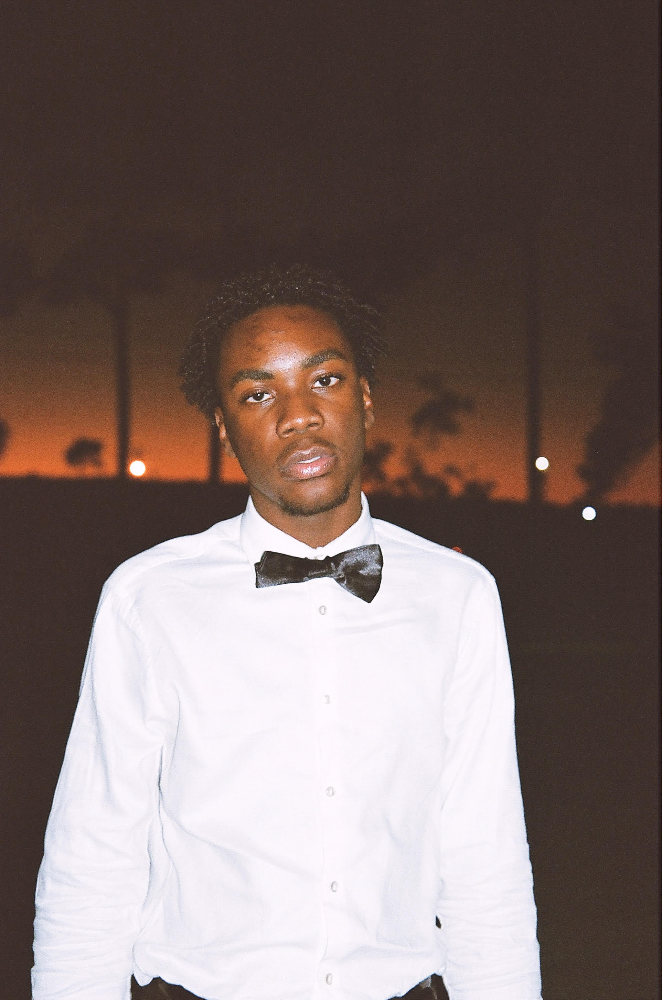
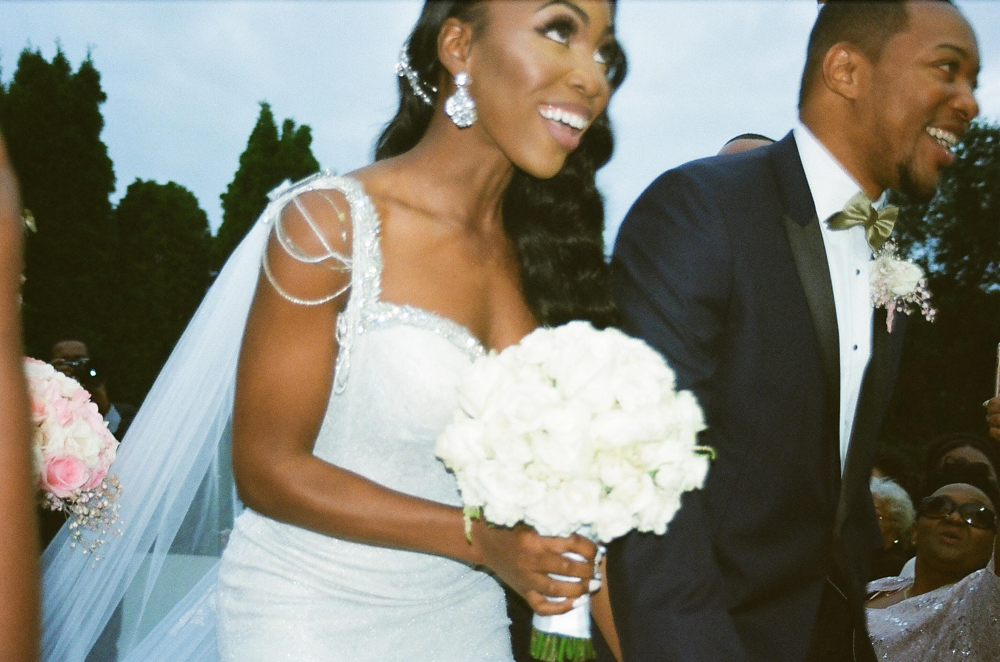

Tai Pie
Freelance photographer based in Miami, Florida.
Click on the images below to view each original "Tai Pie" series.
Photos are both digital and 35mm film.
Enjoy!
The "Portrait" Series

The "Memories" Series

The "Love" Series
The "Abstraction" Series